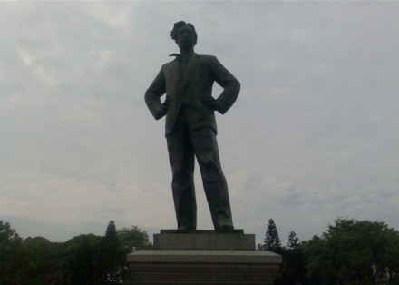
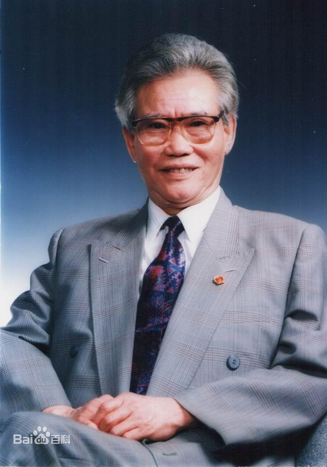
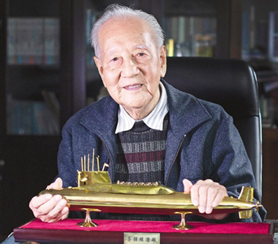

-

- 彭湃
- 彭湃是中国抗战时期农民运动的杰出领袖，为新中国成立作出突出贡献的英雄模范之一。
彭湃1918年入日本早稻田大学政治经济科学习，积极参加中国留学生的反帝爱国活动。1921年5月回国，
不久参加中国社会主义青年团，后长期在广东从事农民运动。1924年转为中国共产党员。7月，在广州创
办农民运动讲习所，曾担任第一届和第五届农民运动讲习所主任。1927年3月任中华全国农民协会临时执行委员会秘书长。
大革命失败后，参与领导八一南昌起义，南下广东后任东江农民自卫军总指挥。八七会议上被选为中央临时政治局委员。
同年11月领导了海陆丰农民武装起义，建立海陆丰苏维埃政权，任中共东江特委书记。1928年11月起被选为中央政治局委员，
并赴上海任中央农委书记。后任中央军委委员、中共江苏省委常委。因叛徒出卖，于1929年8月24日被捕。在敌人的严讯逼供中，
他始终坚贞不屈，大义凛然。1929年8月30日，他与被捕的战友们一起高唱《国际歌》，呼喊着“打倒帝国主义！”“打倒汉奸卖国贼蒋介石！”“中国苏维埃万岁！”“中国红军万岁！”“中国共产党万岁！”
等口号，走向刑场，英勇就义。中共第五、六届中央委员，中央临时政治局委员，第六届中央政治局委员，中央军委委员。
-

-
彭士禄
-
彭士禄（1925年11月18日—2021年3月22日），汉族，革命英烈彭湃之子，广东省汕尾市海丰县人，中国第一任核潜艇总设计师，中国工程院首批及资深院士，被誉为“中国核潜艇之父”。
956年，彭士禄毕业于苏联莫斯科化工机械学院，后又在苏联莫斯科动力学院核动力专业进修。
1958年回中国后一直从事核动力的研究设计工作，曾先后被任命为中国造船工业部副部长兼总
工程师、中国水电部副部长兼总工程师、中国广东大亚湾核电站总指挥、中国国防科工委核潜
艇技术顾问、中国核工业部总工程师兼科技委第二主任、中国秦山二期核电站联营公司首任董
事长。2021年3月22日，彭士禄在北京逝世，享年96岁；5月26日，彭士禄被追授为“时代楷模”。
彭士禄是中国的核动力专家，中国核动力领域的开拓者和奠基者之一，为中国核动力的研究设计做出了开创性工作。
-

-
黄旭华
-
黄旭华，舰船设计专家、核潜艇研究设计专家。1924年2月24日一说1926年3月12日 ）出生于广东省海丰县（今汕尾市田墘街道 ），祖籍广东省揭阳市（今揭东区玉湖镇新寮村 ），汉族，潮汕人 ，客家人 。1949年毕业于国立交通大学船舶制造专业 （毕业后一直从事舰船研制工作）。1949年加入中国共产党。1994年当选为中国工程院院士。湖北省科协荣誉委员，曾任前中国船舶重工集团公司第七一九研究所副总工程师、副所长、所长兼代理党委书记、以及核潜艇工程副总设计师、总设计师、研究员、高级工程师、名誉所长等职。
黄旭华长期从事核潜艇研制工作，开拓了中国核潜艇的研制领域，是中国第一代核动力潜艇研制创始人之一，被誉为“中国核潜艇之父” ，为中国核潜艇事业的发展做出了杰出贡献。主持完成中国第一代核潜艇和导弹核潜艇研制，分别获1985年和1996年“国家科学技术进步奖”特等奖。1989年被授予“全国先进工作者”荣誉称号。2014年被评为“2013感动中国十大人物”。 2017年10月25日，获2017年度何梁何利基金科学与技术成就奖。11月9日，获得第六届全国道德模范敬业奉献类奖项。
2020年1月10日，获国家最高科学技术奖。 2020年12月18日，入选2020中国品牌人物500强，排名52。